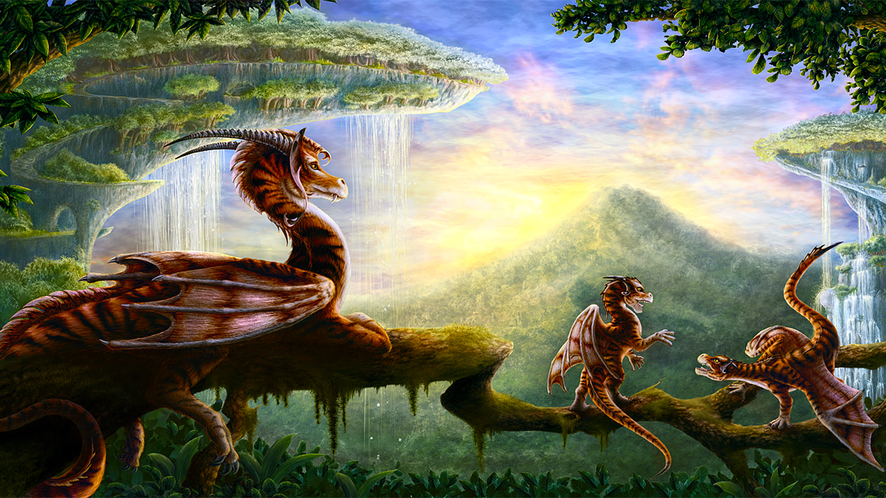

Dragon Habits
- The behaviors and habits of dragons vary wildly from species to species, yet they all have a few things in common. It wasn't until scholars went in search of dragons to find out more about them did we start to understand them.
- Most dragons hoard some type of material, but they do not use this as a bed
- Some species of dragons hibernate in the winter
- Dragons stay with their parents until the age of four to six, where they then head off in search of territory of their own
- Forest dragons that are bonded with a human like to play hide and seek
- Aggressive dragons will flare their wings to make them more imposing
- Dragons that are about to attack will rarely breath fire first, opting to get in close
- Dragons without wings are more skittish when in the open plain
- Forest dragons will often raise their young within the trees to teach them how to balance
- Juveniles tend to be more rambunctious and aggressive than adults and older dragons
- The horns of dragons can signify how old they are by looking at the dark rings around them
- Scholars have found that dragons with bright colors are more active in the day
- More to come...

Dragon Behavior
- Dragons react with aggression if approached with a weapon
- Bonded dragons will actively protect the human they are bonded with
- Dragons that are hovering over a town or village are likely to steal cattle if they can't find other food sources
- Parents will violently attack trespassers that invade their home
- Dragons don't get their ability to breath fire until they are twenty years old
- Injured dragons are likely to lash out when cornered
- More to come...